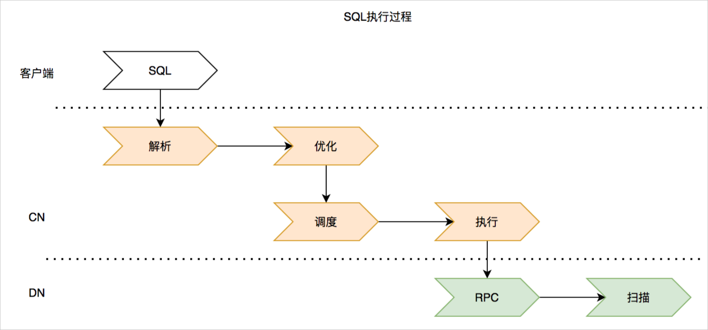

如何分析及优化慢SQL
本文介绍了分析和解决慢SQL的方法。
从数据库角度看，每个SQL执行都需要消耗一定I/O资源，SQL执行的快慢，决定资源被占用时间的长短。假如有一条慢SQL占用了30%的资源共计1分钟。那么在这1分钟时间内，其他SQL能够分配的资源总量就是70%，如此循环，当资源分配完的时候，所有新的SQL执行将会排队等待。所以往往一条慢SQL会影响到整个业务。
PolarDB-X中SQL的执行过程
在分析慢SQL之前，需要先了解SQL的执行过程。一条SQL的执行共涉及到三层，包含两次网络数据交换：客户端到计算节点（CN）、计算节点到数据节点（DN）。

执行过程示意图说明：
橘色部分为不可下推的SQL语句的执行流程，包括解析优化到调度执行两大步骤。
浅绿色部分为可以下推的SQL语句的执行流程，主要过程是将数据节点（DN）的数据进行扫描和计算，并将数据通过私有RPC返回给上层计算节点继续做计算。
结合PolarDB-X数据库的原理和SQL语句的执行过程，发现影响DQL语句执行效率的主要因素包括：
数据量
SQL执行后返回给客户端的数据量的多少；
DN层数据量越大需要扫描的I/O次数越多，DN节点的IO更容易成为瓶颈；
取数据的方式
数据在缓存中还是在磁盘上；
是否通过DN上的全局索引快速寻址；
是否结合谓词条件命中全局索引加速扫描；
数据加工的方式
排序、子查询、聚合、关联等，一般需要先把数据取到临时表中，再对数据进行加工；
对于数据量比较多的计算，会消耗大量计算节点的CPU资源，让数据加工变得更加缓慢；
是否选择了合适的关联算法。
优化思路
将数据存放在更快的地方
某条查询涉及到大表，无法进一步优化，如果返回的数据量不大且变化频率不高但访问频率很高，此时应该考虑将返回的数据放在应用端的缓存当中或者Redis这样的缓存当中，以提高存取速度。
关联操作尽量将计算下推
如果业务大部分都是大表关联操作，那么尽可能设计合理的分片策略。将分片的Key与关联条件的Join Key对齐，PolarDB-X就会把这部分关联操作转化成可下推的物理SQL下推，避免单表扫描带来的压力；
如果涉及到的慢SQL是典型的大小表关联，而小表的数据量不大，且变化频率不高的，那么可以把小表做成广播表，这样任何表和广播表做关联，都会被优化成可下推的物理SQL；
如果关联涉及到的表分片策略无法变更，可以以Join Key为表创建全局二级索引，这样关联操作可以下推，在DN的索引表上做关联。
减少数据扫描
尽量在查询中加入一些可以提前过滤数据的谓词条件，比如按照时间过滤数据等，可以减少数据的扫描量，对查询更友好；
在扫描大表数据时是否可以命中索引，减少回表代价，避免全表扫描。
- 执行计划中选择更合理的数据加工算法 比如关联算法有HashJoin、SortMergeJoin、BkaJoin等，每种关联算法都有特定的场景，执行计划选择不合理，会影响到查询代价。
定位慢SQL
通过命令
show slow和show physical_slow查看逻辑和物理慢SQL，通过指令只能定位到最近100条的慢sql。mysql> show slow; +------------------+---------------+-----------+---------------------+--------------+------------+--------------------+ | TRACE_ID | USER | HOST | START_TIME | EXECUTE_TIME | AFFECT_ROW | SQL | +------------------+---------------+-----------+---------------------+--------------+------------+--------------------+ | 12f812912f400000 | polardbx_root | 127.0.0.1 | 2021-08-24 12:59:38 | 6475 | 0 | show physical_slow | | 12f8128383400000 | polardbx_root | 127.0.0.1 | 2021-08-24 12:59:19 | 1899 | -1 | show physical_slow | +------------------+---------------+-----------+---------------------+--------------+------------+--------------------+ 2 rows in set (0.01 sec) mysql> show physical_slow; Empty set (0.01 sec)
分析慢SQL
慢SQL产生的原因主要包括以下三大类：
业务问题：明显的数据倾斜、不合理的分片策略设置、数据返回过多等和业务使用相关问题；
系统问题：流量太大，资源成为瓶颈或者网络抖动造成的问题；
执行问题：如选错索引，选错Join类型或顺序等问题。
从业务角度分析
如果慢SQL本身是简单查询，但扫描返回的数据本身是十几万或者上百万行，这个是符合预期的，需要从业务上判断是否真的需要返回那么多条数据；
如果某类SQL出现慢SQL只是针对于特定分区键的值和区间，可以通过
show info from T语句，确认是否有数据倾斜问题，是否可以调整分片策略。
mysql> show table info from test_tb;
+----+------------+-----------------+------------+
| ID | GROUP_NAME | TABLE_NAME | SIZE_IN_MB |
+----+------------+-----------------+------------+
| 0 | ads_000000 | test_tb_o2ud_00 | 0.01562500 |
| 1 | ads_000000 | test_tb_o2ud_01 | 0.01562500 |
| 2 | ads_000000 | test_tb_o2ud_02 | 0.01562500 |
| 3 | ads_000000 | test_tb_o2ud_03 | 0.01562500 |
| 4 | ads_000000 | test_tb_o2ud_04 | 0.01562500 |
+----+------------+-----------------+------------+
从系统角度分析
慢SQL出现时会伴随着业务流量上涨，可以先去查看对应时间点的计算和存储上的资源监控，判断是否存在资源被打满，如果是由于业务流量上涨，导致资源被打满，出现慢sql是合理现象，可以考虑做资源扩容或者采取SQL限流。
如果从慢日志查看不到慢SQL，但是从业务上确实受到慢SQL影响，且已经排除掉了是业务自身问题，这个时候可以查看是否是网络问题，确认下客户端和服务端是否处于一个VPC网络或者通过抓包进一步分析。
从执行角度分析
PolarDB-X提供了丰富的explain指令，来排查是否是查询本身导致的慢SQL。
查看逻辑执行计划 执行
explain语句，查看逻辑执行计划。mysql> explain select nation, o_year, sum(amount) as sum_profit from ( select n_name as nation, extract(year from o_orderdate) as o_year, l_extendedprice * (1 - l_discount) - ps_supplycost * l_quantity as amount from part, supplier, lineitem, partsupp, orders, nation where s_suppkey = l_suppkey and ps_suppkey = l_suppkey and ps_partkey = l_partkey and p_partkey = l_partkey and o_orderkey = l_orderkey and s_nationkey = n_nationkey and p_name like '%yellow%' ) as profit group by nation, o_year order by nation, o_year desc limit 1; +-------------------------------------------------------------------------------------------------------------------------------------------------------------------------------------------------------------------------------------------------------------------------------------------------------------------------------------------------------------------------------------------------------------+ | LOGICAL EXECUTIONPLAN | +-------------------------------------------------------------------------------------------------------------------------------------------------------------------------------------------------------------------------------------------------------------------------------------------------------------------------------------------------------------------------------------------------------------+ | Limit(offset=0, fetch=?2) | | SortAgg(group="nation,o_year", $f2="SUM(amount)") | | Project(nation="N_NAME", o_year="EXTRACT", amount="__*__ - PS_SUPPLYCOST * L_QUANTITY") | | HashJoin(condition="PS_PARTKEY = L_PARTKEY AND P_PARTKEY = L_PARTKEY AND PS_SUPPKEY = L_SUPPKEY AND PS_SUPPKEY = S_SUPPKEY", type="inner") | | MemSort(sort="N_NAME ASC,EXTRACT DESC") | | BKAJoin(condition="O_ORDERKEY = L_ORDERKEY", type="inner") | | Project(S_SUPPKEY="S_SUPPKEY", S_NATIONKEY="S_NATIONKEY", N_NATIONKEY="N_NATIONKEY", N_NAME="N_NAME", L_ORDERKEY="L_ORDERKEY", L_PARTKEY="L_PARTKEY", L_SUPPKEY="L_SUPPKEY", L_QUANTITY="L_QUANTITY", __*__="__*__") | | HashJoin(condition="L_SUPPKEY = S_SUPPKEY", type="inner") | | Gather(concurrent=true) | | LogicalView(tables="[000000-000003].lineitem_[00-15]", shardCount=16, sql="SELECT `L_ORDERKEY`, `L_PARTKEY`, `L_SUPPKEY`, `L_QUANTITY`, (`L_EXTENDEDPRICE` * (? - `L_DISCOUNT`)) AS `__*__` FROM `lineitem` AS `lineitem`") | | BKAJoin(condition="N_NATIONKEY = S_NATIONKEY", type="inner") | | Gather(concurrent=true) | | LogicalView(tables="[000000-000003].supplier_[00-15]", shardCount=16, sql="SELECT `S_SUPPKEY`, `S_NATIONKEY` FROM `supplier` AS `supplier`") | | Gather(concurrent=true) | | LogicalView(tables="[000000-000003].nation_[00-15]", shardCount=16, sql="SELECT `N_NATIONKEY`, `N_NAME` FROM `nation` AS `nation` WHERE (`N_NATIONKEY` IN (...))") | | Gather(concurrent=true) | | LogicalView(tables="[000000-000003].orders_[00-15]", shardCount=16, sql="SELECT `O_ORDERKEY`, EXTRACT(YEAR FROM `O_ORDERDATE`) AS `EXTRACT` FROM `orders` AS `orders` WHERE (`O_ORDERKEY` IN (...))") | | Gather(concurrent=true) | | LogicalView(tables="[000000-000003].part_[00-15],partsupp_[00-15]", shardCount=16, sql="SELECT `part`.`P_PARTKEY`, `partsupp`.`PS_PARTKEY`, `partsupp`.`PS_SUPPKEY`, `partsupp`.`PS_SUPPLYCOST` FROM `part` AS `part` INNER JOIN `partsupp` AS `partsupp` ON ((`part`.`P_PARTKEY` = `partsupp`.`PS_PARTKEY`) AND (`part`.`P_NAME` LIKE ?)) WHERE (`partsupp`.`PS_PARTKEY` = `part`.`P_PARTKEY`)") | | HitCache:false | | Source:PLAN_CACHE
说明 LogicalView里的shardCount参数表示需访问的分表总数。
根据执行计划分析SQL执行过程是否符合预期，主要关注全局二级索引、聚合算子和 JOIN 算子算法选择是否合理，执行计划的优劣直接影响到执行快慢。如果确认是优化过程中的执行计划不合理的话，可以按照下面三种方式去解决：
执行计划的生成是基于统计信息的，如果统计信息缺失和过期，有可能导致优化出来的执行计划不是最佳的。可以通过
analyze table语句手动触发统计信息收集。mysql> show statistic; //可以查看统计信息是否被正确收集 +---------------+------------+-------------+-------------+ | table_name | table_rows | column_name | cardinality | +---------------+------------+-------------+-------------+ | tpch_orders | 8400 | NULL | NULL | | tpch_lineitem | 10000 | NULL | NULL | | lineitem | 8492 | NULL | NULL | | tpch_part | 8054 | NULL | NULL | | aa_lineitem | 8490 | l_id | 9143 | | part | 8054 | NULL | NULL | | not_rt | 8446 | NULL | NULL | | aa_orders | 8308 | o_id | 9095 | | partsupp | 8609 | NULL | NULL | | aa_partsupp | 8667 | ps_id | 9424 | | tpch_partsupp | 8596 | NULL | NULL | | tpch_customer | 8572 | NULL | NULL | | orders | 8423 | NULL | NULL | | aa_customer | 9080 | c_id | 9476 | | customer | 8472 | NULL | NULL | +---------------+------------+-------------+-------------+ 15 rows in set (0.01 sec) mysql> analyze table lineitem; //指定表名手动收集统计信息 +--------------+---------+----------+----------+ | TABLE | OP | MSG_TYPE | MSG_TEXT | +--------------+---------+----------+----------+ | ads.lineitem | analyze | status | OK | +--------------+---------+----------+----------+ 1 row in set (1.66 sec)
在统计信息合理的基础上，优化器生成的执行计划可能还不是最优的。因为优化器的优化过程实际上是利用动态规划算子寻找相对最优解的过程，存在一定的不确定性。所以可以通过[HINT force index 手动制定最佳执行计划。
查看物理执行计划 执行
explain execute语句，查看下推SQL在DN上执行的计划，主要用于确认在DN上的执行是否选择了合适的局部索引。同样可以通过 force index 指令强制指定索引，选择合适的局部索引可以加快下推SQL在DN上的扫描效率。mysql> explain execute select * from lineitem; +----+-------------+----------+------------+------+---------------+-----+---------+-----+------+----------+-------+ | id | select_type | table | partitions | type | possible_keys | key | key_len | ref | rows | filtered | Extra | +----+-------------+----------+------------+------+---------------+-----+---------+-----+------+----------+-------+ | 1 | SIMPLE | lineitem | NULL | ALL | NULL | NULL | NULL | NULL | 1 | 100 | NULL | +----+-------------+----------+------------+------+---------------+-----+---------+-----+------+----------+-------+ 1 row in set (0.02 sec) mysql> explain execute select L_LINENUMBER from lineitem; +----+-------------+----------+------------+-------+---------------+---------+---------+-----+------+----------+-------------+ | id | select_type | table | partitions | type | possible_keys | key | key_len | ref | rows | filtered | Extra | +----+-------------+----------+------------+-------+---------------+---------+---------+-----+------+----------+-------------+ | 1 | SIMPLE | lineitem | NULL | index | NULL | PRIMARY | 8 | NULL | 1 | 100 | Using index | +----+-------------+----------+------------+-------+---------------+---------+---------+-----+------+----------+-------------+ 1 row in set (0.04 sec)
分析查询耗时 如果一条SQL每次执行都很慢，我们可以通过
explain analyze语句分析查询到底慢在哪个算子上。mysql> explain analyze select L_SUPPKEY, count(*) from lineitem group by L_SUPPKEY; +----------------------------------------------------------------------------------------------------------------------------------------------------------------------------------------------------------------------------------------------------------------------------------------------------------------------------------------------------------------------------------------------------+ | LOGICAL EXECUTIONPLAN | +----------------------------------------------------------------------------------------------------------------------------------------------------------------------------------------------------------------------------------------------------------------------------------------------------------------------------------------------------------------------------------------------------+ | HashAgg(group="L_SUPPKEY", count(*)="SUM(count(*))"): rowcount = 1000.0, cumulative cost = value = 2.4863085E7, cpu = 108049.0, memory = 35480.0, io = 201.0, net = 4.75, actual time = 0.000 + 0.000, actual rowcount = 1000, actual memory = 0, instances = 1, id = 519 | | Gather(concurrent=true): rowcount = 1000.0, cumulative cost = value = 2.4860051E7, cpu = 105039.0, memory = 11881.0, io = 201.0, net = 4.75, actual time = 0.000 + 0.000, actual rowcount = 0, actual memory = 0, instances = 0, id = 517 | | LogicalView(tables="[000000-000003].lineitem_[00-15]", shardCount=16, sql="SELECT `L_SUPPKEY`, COUNT(*) AS `count(*)` FROM `lineitem` AS `lineitem` GROUP BY `L_SUPPKEY`"): rowcount = 1000.0, cumulative cost = value = 2.486005E7, cpu = 105038.0, memory = 11881.0, io = 201.0, net = 4.75, actual time = 0.004 + 0.002, actual rowcount = 4892, actual memory = 0, instances = 0, id = 453 |
参数说明：
rowcount：基于统计信息预估的算子输出行数
actual rowcount：真实执行过程中算子实际输出函数
actual time: 真实执行过程中算子实际耗时
通过explain analyze语句可以准确知道查询耗时主要耗时在哪里，对症下药。如果是并发度不够，可以通过调整并发度加速查询。此外还可以通过trace指令，准确知道真实的下推物理SQL和耗时，明确耗时长是发生在CN层还是DN层。
mysql> trace select L_SUPPKEY, count(*) from lineitem group by L_SUPPKEY limit 1;
+-----------+----------+
| L_SUPPKEY | count(*) |
+-----------+----------+
| 1 | 12 |
+-----------+----------+
1 row in set (0.21 sec)
mysql> show trace;
+----+----------------+-----------+-------+------------------+----------------------------------------------------------------------------+---------------+--------------------------+---------------------+---------------------+------+-------------------------------------------------------------------------------------------------------------------------------+----------------------+
| ID | NODE_IP | TIMESTAMP | TYPE | GROUP_NAME | DBKEY_NAME | TIME_COST(MS) | CONNECTION_TIME_COST(MS) | TOTAL_TIME_COST(MS) | CLOSE_TIME_COST(MS) | ROWS | STATEMENT | PARAMS |
+----+----------------+-----------+-------+------------------+----------------------------------------------------------------------------+---------------+--------------------------+---------------------+---------------------+------+-------------------------------------------------------------------------------------------------------------------------------+----------------------+
| 0 | 192.168.31.105 | 0.000 | Query | ADS_000003_GROUP | dskey_ads_000003_group#polardbx-storage-1-master#127.0.0.1-3306#ads_000003 | 3 | 0.00 | 3 | 0 | 0 | /*DRDS /127.0.0.1/12f940ed62400000/0// */SELECT `L_SUPPKEY`, COUNT(*) AS `count(*)`
FROM ? AS `lineitem`
GROUP BY `L_SUPPKEY` | [`lineitem_MgSG_13`] |
| 1 | 192.168.31.105 | -0.000 | Query | ADS_000003_GROUP | dskey_ads_000003_group#polardbx-storage-1-master#127.0.0.1-3306#ads_000003 | 4 | 0.00 | 7 | 0 | 0 | /*DRDS /127.0.0.1/12f940ed62400000/0// */SELECT `L_SUPPKEY`, COUNT(*) AS `count(*)`
FROM ? AS `lineitem`
GROUP BY `L_SUPPKEY` | [`lineitem_MgSG_12`] |
| 2 | 192.168.31.105 | 0.000 | Query | ADS_000003_GROUP | dskey_ads_000003_group#polardbx-storage-1-master#127.0.0.1-3306#ads_000003 | 2 | 0.00 | 2 | 0 | 0 | /*DRDS /127.0.0.1/12f940ed62400000/0// */SELECT `L_SUPPKEY`, COUNT(*) AS `count(*)`
FROM ? AS `lineitem`
GROUP BY `L_SUPPKEY` | [`lineitem_MgSG_14`] |
| 3 | 192.168.31.105 | 0.000 | Query | ADS_000003_GROUP | dskey_ads_000003_group#polardbx-storage-1-master#127.0.0.1-3306#ads_000003 | 3 | 0.00 | 3 | 0 | 0 | /*DRDS /127.0.0.1/12f940ed62400000/0// */SELECT `L_SUPPKEY`, COUNT(*) AS `count(*)`
FROM ? AS `lineitem`
GROUP BY `L_SUPPKEY` | [`lineitem_MgSG_15`] |
| 4 | 192.168.31.105 | 0.000 | Query | ADS_000001_GROUP | dskey_ads_000001_group#polardbx-storage-1-master#127.0.0.1-3306#ads_000001 | 5 | 0.00 | 14 | 2 | 746 | /*DRDS /127.0.0.1/12f940ed62400000/0// */SELECT `L_SUPPKEY`, COUNT(*) AS `count(*)`
FROM ? AS `lineitem`
GROUP BY `L_SUPPKEY` | [`lineitem_MgSG_04`] |
| 5 | 192.168.31.105 | 0.000 | Query | ADS_000001_GROUP | dskey_ads_000001_group#polardbx-storage-1-master#127.0.0.1-3306#ads_000001 | 4 | 0.00 | 15 | 1 | 682 | /*DRDS /127.0.0.1/12f940ed62400000/0// */SELECT `L_SUPPKEY`, COUNT(*) AS `count(*)`
FROM ? AS `lineitem`
GROUP BY `L_SUPPKEY` | [`lineitem_MgSG_05`] |
| 6 | 192.168.31.105 | 0.000 | Query | ADS_000001_GROUP | dskey_ads_000001_group#polardbx-storage-1-master#127.0.0.1-3306#ads_000001 | 9 | 0.00 | 15 | 1 | 516 | /*DRDS /127.0.0.1/12f940ed62400000/0// */SELECT `L_SUPPKEY`, COUNT(*) AS `count(*)`
FROM ? AS `lineitem`
GROUP BY `L_SUPPKEY` | [`lineitem_MgSG_06`] |
| 7 | 192.168.31.105 | 0.000 | Query | ADS_000001_GROUP | dskey_ads_000001_group#polardbx-storage-1-master#127.0.0.1-3306#ads_000001 | 7 | 0.00 | 15 | 0 | 310 | /*DRDS /127.0.0.1/12f940ed62400000/0// */SELECT `L_SUPPKEY`, COUNT(*) AS `count(*)`
FROM ? AS `lineitem`
GROUP BY `L_SUPPKEY` | [`lineitem_MgSG_07`] |
| 8 | 192.168.31.105 | 0.000 | Query | ADS_000000_GROUP | dskey_ads_000000_group#polardbx-storage-0-master#127.0.0.1-3306#ads_000000 | 2 | 0.00 | 3 | 0 | 0 | /*DRDS /127.0.0.1/12f940ed62400000/0// */SELECT `L_SUPPKEY`, COUNT(*) AS `count(*)`
FROM ? AS `lineitem`
GROUP BY `L_SUPPKEY` | [`lineitem_MgSG_00`] |
| 9 | 192.168.31.105 | 0.000 | Query | ADS_000000_GROUP | dskey_ads_000000_group#polardbx-storage-0-master#127.0.0.1-3306#ads_000000 | 5 | 0.00 | 7 | 1 | 884 | /*DRDS /127.0.0.1/12f940ed62400000/0// */SELECT `L_SUPPKEY`, COUNT(*) AS `count(*)`
FROM ? AS `lineitem`
GROUP BY `L_SUPPKEY` | [`lineitem_MgSG_02`] |
| 10 | 192.168.31.105 | 0.000 | Query | ADS_000002_GROUP | dskey_ads_000002_group#polardbx-storage-0-master#127.0.0.1-3306#ads_000002 | 2 | 0.00 | 5 | 0 | 0 | /*DRDS /127.0.0.1/12f940ed62400000/0// */SELECT `L_SUPPKEY`, COUNT(*) AS `count(*)`
FROM ? AS `lineitem`
GROUP BY `L_SUPPKEY` | [`lineitem_MgSG_08`] |
| 11 | 192.168.31.105 | 0.000 | Query | ADS_000000_GROUP | dskey_ads_000000_group#polardbx-storage-0-master#127.0.0.1-3306#ads_000000 | 6 | 0.00 | 11 | 0 | 917 | /*DRDS /127.0.0.1/12f940ed62400000/0// */SELECT `L_SUPPKEY`, COUNT(*) AS `count(*)`
FROM ? AS `lineitem`
GROUP BY `L_SUPPKEY` | [`lineitem_MgSG_01`] |
| 12 | 192.168.31.105 | 0.000 | Query | ADS_000000_GROUP | dskey_ads_000000_group#polardbx-storage-0-master#127.0.0.1-3306#ads_000000 | 7 | 0.00 | 10 | 1 | 837 | /*DRDS /127.0.0.1/12f940ed62400000/0// */SELECT `L_SUPPKEY`, COUNT(*) AS `count(*)`
FROM ? AS `lineitem`
GROUP BY `L_SUPPKEY` | [`lineitem_MgSG_03`] |
| 13 | 192.168.31.105 | 0.000 | Query | ADS_000002_GROUP | dskey_ads_000002_group#polardbx-storage-0-master#127.0.0.1-3306#ads_000002 | 3 | 0.00 | 3 | 0 | 0 | /*DRDS /127.0.0.1/12f940ed62400000/0// */SELECT `L_SUPPKEY`, COUNT(*) AS `count(*)`
FROM ? AS `lineitem`
GROUP BY `L_SUPPKEY` | [`lineitem_MgSG_09`] |
| 14 | 192.168.31.105 | 0.000 | Query | ADS_000002_GROUP | dskey_ads_000002_group#polardbx-storage-0-master#127.0.0.1-3306#ads_000002 | 2 | 0.00 | 2 | 0 | 0 | /*DRDS /127.0.0.1/12f940ed62400000/0// */SELECT `L_SUPPKEY`, COUNT(*) AS `count(*)`
FROM ? AS `lineitem`
GROUP BY `L_SUPPKEY` | [`lineitem_MgSG_10`] |
| 15 | 192.168.31.105 | 0.000 | Query | ADS_000002_GROUP | dskey_ads_000002_group#polardbx-storage-0-master#127.0.0.1-3306#ads_000002 | 1 | 0.00 | 3 | 1 | 0 | /*DRDS /127.0.0.1/12f940ed62400000/0// */SELECT `L_SUPPKEY`, COUNT(*) AS `count(*)`
FROM ? AS `lineitem`
GROUP BY `L_SUPPKEY` | [`lineitem_MgSG_11`] |
+----+----------------+-----------+-------+------------------+----------------------------------------------------------------------------+---------------+--------------------------+---------------------+---------------------+------+-------------------------------------------------------------------------------------------------------------------------------+----------------------+
16 rows in set (0.05 sec)